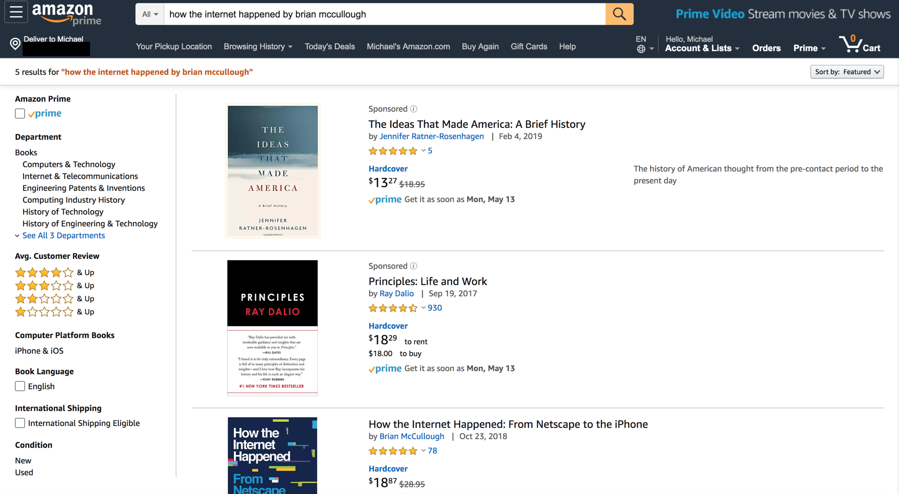
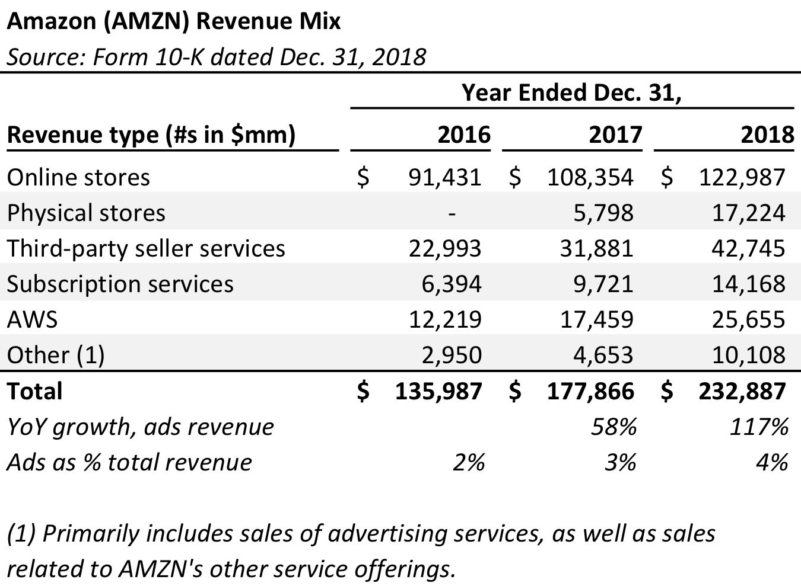

05/12/2019

Before seeing this, I hadn’t given much thought to Amazon’s ads business. Turns out, it’s significant. And growing.

Amazon doesn’t explicitly state how much it generates in ad revenue. Rather, it discloses ‘Other’ revenue, which “primarily includes sales of advertising services, as well as sales related to our other service offerings.” In 2017, Amazon did $4.6 billion in ‘Other’ revenue. It more than doubled that last year, posting $10.1 billion.
Amazon generated more than $232 billion in total revenue last year. So, ads is insignificant right now. But it is still large enough to be a (significant) standalone business.
I’m curious to see how sustainable this ad growth will be. And I wonder how the quality of our searches will drop as a result.